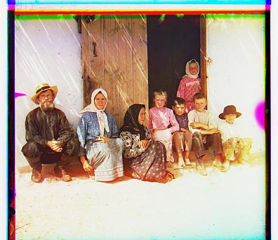

Cathedral
R: [12 3], G: [5 2]

Monastery
R: [3 2], G: [-3 2]

Nativity
R: [7 0], G: [3 1]
Settlers
R: [15 -1], G: [7 0]
Tobolsk
R: [6 3], G: [3 3]
|
Cathedral R: [12 3], G: [5 2] |
Monastery R: [3 2], G: [-3 2] |
Nativity R: [7 0], G: [3 1] |
|---|---|---|
|
 Settlers R: [15 -1], G: [7 0] |
Tobolsk R: [6 3], G: [3 3] |
|
Bridge R: [68 5], G: [12 -10] |
Emir R: [104 56], G: [49 24] |
Harvesters R: [124 13], G: [60 17] |
Icon R: [89 23], G: [41 17] |
|---|---|---|---|
|
Lady R: [117 11], G: [54 9] |
Melons R: [134 14], G: [82 11] Upon closer inspection, I noticed that the image taken through the red filter looked much brighter than those taken through the green and blue filters, which had much more similar pixel intensities. While the blue and green images aligned fairly well, the unaligned red channel creates a noticeable ghosting effect.
|
 Onion Church R: [108 36], G: [51 26] |
Self Portrait R: [134 34], G: [79 29] Similar to the melons photo, the green and blue sections aligned fairly consistently, but the red filtered photo was different enough to create alignment issues.
|
|
Three Generations R: [112 11], G: [53 14] |
Train R: [87 32], G: [42 6] |
Turkman R: [116 28], G: [56 21] |
Workshop R: [105 -12], G: [53 0] |
|
Village R: [134 22], G: [65 12] |
|
Icon of the Last Judgement. R: [113 20], G: [49 14] |
Crew of the steamship "Sheksna" of the M.P.S. R: [56 30], G: [21 18] |
Old gates in the Church of the Assumption of the Mother of God. R: [92 30], G: [18 18] |
Iconostasis in the Church of the Transfiguration. R: [94 -26], G: [34 -5] |
|---|
|
Before:
|
After:
|
|---|
|
Before:
|
After:
|
|---|